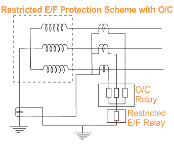
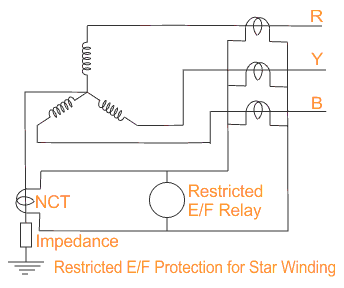

Restricted Earth Fault Protection of Transformer
An external fault in the star side will result in electric current flowing in the line current transformer of the affected phase and at the same time a balancing electric current flows in the neutral electric current transformer, hence the resultant electric current in the relay is therefore zero. So this REF relay will not be actuated for external earth fault. But during internal fault the neutral electric current transformer only carries the unbalance fault electric current and operation of Restricted Earth Fault Relay takes place. This scheme of restricted earth fault protection is very sensitive for internal earth fault of electrical power transformer. The protection scheme is comparatively cheaper than differential protection scheme
Restricted earth fault protection is provided in electrical power transformer for sensing internal earth fault of the transformer. In this scheme the CT secondary of each phase of electrical power transformer are connected together as shown in the figure. Then common terminals are connected to the secondary of a Neutral Current Transformer or NCT. The CT or Current Transformer connected to the neutral of power transformer is called Neutral Current Transformer or Neutral CT or simply NCT. Whenever there is an unbalancing in between three phases of the power transformer, a resultant unbalance electric current flow through the close path connected to the common terminals of the CT secondaries. An unbalance electric current will also flow through the neutral of power transformer and hence there will be a secondary electric current in Neutral CT because of this unbalance neutral current. In Restricted Earth Fault scheme the common terminals of phase CTs are connected to the secondary of Neutral CT in such a manner that secondary unbalance electric current of phase CTs and the secondary electric current of Neutral CT will oppose each other. If these both electric currents are equal in amplitude there will not be any resultant electric current circulate through the said close path. The Restricted Earth Fault Relay is connected in this close path. Hence the relay will not response even there is an unbalancing in phase electric current of the power transformer.

 |
 |
 by
by